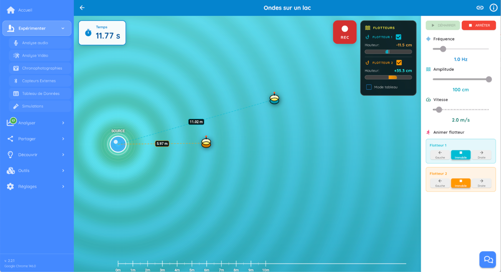
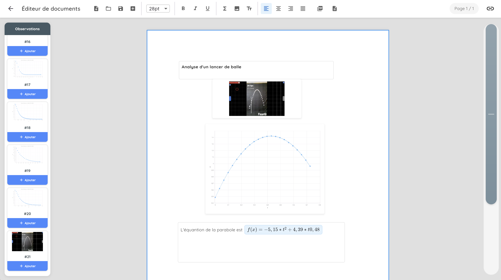

1. Introduction
1.1 Qu'est-ce que FizziQ Web ?
FizziQ Web est une application web gratuite qui accompagne les eleves tout au long de leur demarche scientifique experimentale. De la capture des donnees jusqu'a la communication des resultats, FizziQ Web fournit tous les outils necessaires pour mener une seance d'experimentation complete sur ordinateur.
1.2 Les trois piliers de FizziQ Web
FizziQ Web est organise autour de trois grandes fonctionnalites qui correspondent aux trois etapes de la demarche scientifique :
1. Experimenter
Capturer des donnees
2. Analyser
Organiser et comprendre
3. Partager
Communiquer ses resultats
Experimenter : capturer les donnees
FizziQ Web propose cinq sources de donnees, toutes compatibles entre elles :
- Analyse audio : enregistrement et analyse du son via le micro de l'ordinateur (niveau sonore, frequence, spectre, spectrogramme)
- Analyse cinematique : pointage de videos et de chronophotographies pour etudier les mouvements (positions, vitesses, accelerations)
- Capteurs externes : connexion a FizziQ Connect ou a des microcontroleurs (Arduino, micro:bit) via Bluetooth ou USB
- Saisie manuelle : creation de tableaux de donnees remplis par l'eleve
- Simulations : experiences virtuelles (pendule, ressort, balistique, circuits, ondes, gaz ideal...) generant des donnees exploitables
Analyser : organiser et comprendre les donnees
Toutes les donnees capturees arrivent dans le cahier d'experiences sous forme de fiches d'observation. L'eleve peut :
- Organiser ses donnees dans des tableaux
- Ajouter des colonnes et creer des grandeurs calculees (formules)
- Definir les unites de chaque grandeur
- Creer des graphiques avec differentes echelles
- Realiser des modelisations et ajustements de courbes
Partager : communiquer ses resultats
Une fois l'analyse terminee, l'eleve peut creer un rapport final qui synthetise sa recherche :
- Redaction de texte explicatif
- Insertion de photos et schemas
- Integration des tableaux et graphiques du cahier d'experiences
- Ajout de formules mathematiques (syntaxe LaTeX)
- Export en PDF, Word ou image
1.3 Fonctionnalites detaillees
Analyse audio
Oscillogramme, spectre, spectrogramme
Analyse video
Pointage, cinematique, trajectoires
Chronophotographies
Import et analyse de mouvements
Simulations
Pendule, ressort, ondes, gaz...
FizziQ Connect
Capteurs externes Bluetooth/USB
Tableaux de donnees
Donnees, formules, graphiques
Editeur de rapport
Rapports avec formules LaTeX
Python
Interpreteur integre
1.3 Compatibilite navigateur
| Navigateur | Audio | Video | Simulations | Bluetooth | USB |
|---|---|---|---|---|---|
| Chrome | Oui | Oui | Oui | Oui | Oui |
| Edge | Oui | Oui | Oui | Oui | Oui |
| Firefox | Oui | Oui | Oui | Non | Non |
| Safari | Oui | Oui | Oui | Non | Non |
1.4 Differences avec FizziQ mobile
FizziQ Web est complementaire a l'application mobile :
- Pas de capteurs integres : un ordinateur n'a pas d'accelerometre ou de GPS (utilisez FizziQ Connect pour les capteurs externes)
- Analyse audio avancee : spectrogramme haute resolution, analyse detaillee
- Analyse video complete : pointage cinematique, calcul des vitesses et accelerations
- Simulations de physique : pendule, ressort, balistique, circuits, ondes, gaz ideal, plan incline, centrifuge
- Ecran plus grand : ideal pour l'analyse de donnees, les graphiques et les rapports
- Editeur de documents : rapports scientifiques avec formules LaTeX
1.5 Confidentialite et gratuité
2. Prise en main
2.1 Acceder a FizziQ Web
- Ouvrez votre navigateur Chrome ou Edge
- Allez sur fizziqweb.web.app
- Cliquez sur Experimenter pour acceder aux outils
2.2 Interface generale

L'interface de FizziQ Web est organisee autour d'un menu lateral gauche :
- Accueil : page d'accueil et acces rapide
- Experimenter : acces aux modules d'analyse et de simulation
- Analyse audio
- Analyse video
- Chronophotographies
- Capteurs externes (FizziQ Connect)
- Tableau de donnees
- Simulations
- Analyser : outils d'analyse des donnees
- Partager : partage d'ecran et export
- Decouvrir : activites et ressources pedagogiques
- Outils : outils complementaires (calculatrice, synthetiseur...)
- Reglages : parametres de l'application
2.3 Premiere mesure : analyser un son
Voici comment realiser votre premiere analyse audio :
- Cliquez sur Experimenter → Analyse audio
- Cliquez sur Source Audio → Bibliotheque de sons
- Selectionnez Diapason La 3 (440 Hz)
- Observez l'oscillogramme et le spectre de frequences
- Utilisez la molette ou les boutons Zoom pour voir les details
- Cliquez sur Ajouter au cahier pour exporter l'analyse
3. Analyse audio - Experimenter

3.1 Sources audio
Vous pouvez analyser le son de plusieurs manieres :
- Enregistrer avec le microphone de l'ordinateur
- Charger un fichier audio (WAV, MP3, OGG, FLAC, M4A)
- Bibliotheque de sons integree
Bibliotheque de sons
La bibliotheque integree propose de nombreux sons pedagogiques :
- Diapason 440 Hz : son pur de reference
- Instruments de musique : piano, guitare, flute, violon...
- Bruit blanc : toutes les frequences
- Sirene : variation de frequence
- Effet Doppler : demonstration du decalage de frequence
- Cloches de Risset : illusion auditive de montee infinie
- Battements : interference de deux frequences proches
3.2 Modes d'analyse
| Mode | Affichage | Utilisation |
|---|---|---|
| Amplitude | Forme d'onde temporelle (oscillogramme) | Observer la structure du son, mesurer la periode |
| Niveau sonore (dB) | Intensite en decibels | Mesurer le volume, comparer des sources |
| Frequence fondamentale | Frequence principale (Hz) | Identifier une note, accorder un instrument |
| Spectre | Frequences a un instant | Analyser les harmoniques, le timbre |
| Spectrogramme | Evolution temps-frequence | Sons complexes, melodies, voix, effet Doppler |
3.3 Lecture du spectrogramme
Le spectrogramme affiche l'evolution du spectre de frequences dans le temps. C'est un outil puissant pour analyser des sons complexes.
Code couleur :
- Noir : silence
- Bleu : faible intensite
- Jaune : intensite moyenne
- Rouge : intensite maximale
Exemples d'utilisation du spectrogramme
- Melodie : observer les notes successives
- Voix : analyser les formants et les harmoniques
- Effet Doppler : visualiser le decalage de frequence
- Instruments : comparer les timbres
3.4 Outils de mesure
- Curseur interactif : cliquez sur le graphique pour mesurer un point precis
- Zoom : molette ou boutons +/- pour agrandir
- Synchronisation : lecture audio synchronisee avec l'affichage
- Affichage min/max : visualiser l'enveloppe du signal
3.5 Export des donnees audio
Selon le mode d'analyse, vous pouvez exporter :
- Mode Amplitude : Temps (s), Amplitude
- Mode Frequence : Temps (s), Frequence (Hz)
- Mode Spectre : Frequence (Hz), Magnitude
- Spectrogramme : tableau de donnees ou image
4. Analyse video - Experimenter
FizziQ Web integre un module complet d'analyse video cinematique, permettant d'etudier le mouvement d'objets a partir de videos.
4.1 Import de videos
Formats supportes : MP4, WebM, MOV, AVI et la plupart des formats video courants.
- Cliquez sur Experimenter → Analyse video
- Cliquez sur Charger une video
- Selectionnez votre fichier video
- La video s'affiche dans l'interface de pointage
4.2 Calibration de l'echelle
Avant de pointer, vous devez calibrer l'echelle pour convertir les pixels en metres :
- Cliquez sur Calibrer l'echelle
- Cliquez sur les deux extremites d'un objet de reference (regle, metre...)
- Entrez la longueur reelle de l'objet
- L'echelle est definie pour toute l'analyse
4.3 Pointage des positions
Le pointage consiste a relever la position d'un objet image par image :
- Selectionnez le point a suivre (centre de l'objet)
- Cliquez sur l'objet dans la premiere image
- Avancez a l'image suivante (bouton ou fleche)
- Cliquez sur la nouvelle position de l'objet
- Repetez jusqu'a la fin du mouvement
4.4 Grandeurs calculees automatiquement
A partir des positions pointees, FizziQ Web calcule automatiquement :
| Grandeur | Symbole | Description |
|---|---|---|
| Position x | x(t) | Position horizontale en fonction du temps |
| Position y | y(t) | Position verticale en fonction du temps |
| Vitesse vx | vx(t) | Composante horizontale de la vitesse |
| Vitesse vy | vy(t) | Composante verticale de la vitesse |
| Vitesse | v(t) | Norme de la vitesse |
| Acceleration ax | ax(t) | Composante horizontale de l'acceleration |
| Acceleration ay | ay(t) | Composante verticale de l'acceleration |
| Acceleration | a(t) | Norme de l'acceleration |
| Angle | θ(t) | Angle de rotation (pour les mouvements de rotation) |
| Energie cinetique | Ec(t) | ½mv² (si la masse est definie) |
| Energie potentielle | Ep(t) | mgh (si la masse est definie) |
4.5 Methodes de calcul
FizziQ Web propose plusieurs methodes pour calculer les derivees (vitesse, acceleration) :
- Interpolation lineaire : methode simple, adaptee aux mouvements lents
- Interpolation quadratique : methode plus precise, reduit le bruit
- Lissage : attenuation du bruit de mesure
4.6 Exemples d'experiences video
- Chute libre : verifier a = g ≈ 9.8 m/s²
- Lancer parabolique : etudier la trajectoire, verifier vx = cste
- Mouvement circulaire : analyser la rotation, calculer l'acceleration centripete
- Oscillations : etudier un pendule ou un ressort filme
- Chocs : verifier la conservation de la quantite de mouvement
- Camera fixe sur trepied
- Fond uniforme contrastant avec l'objet
- Bon eclairage
- Objet de reference visible pour la calibration
- Frequence d'image elevee (60 fps ou plus pour les mouvements rapides)
5. Chronophotographies - Experimenter
Une chronophotographie est une image montrant les positions successives d'un objet en mouvement, superposees sur une seule image. FizziQ Web permet d'analyser ces images et aussi de les creer a partir de videos.
5.1 Import d'une chronophotographie
- Cliquez sur Experimenter → Chronophotographies
- Cliquez sur Charger une image
- Selectionnez votre fichier image (PNG, JPG...)
- Calibrez l'echelle comme pour la video
- Pointez les positions successives de l'objet
5.2 Creer une chronophotographie a partir d'une video
FizziQ Web peut convertir une video en chronophotographie :
- Allez dans Outils → Convertisseur video → chronophotographie
- Chargez votre video
- Selectionnez l'intervalle de temps entre les images
- Choisissez le nombre d'images a superposer
- Exportez l'image resultante
5.3 Analyse cinematique
L'analyse d'une chronophotographie donne les memes grandeurs que l'analyse video :
- Positions x(t) et y(t)
- Vitesses vx(t) et vy(t)
- Accelerations ax(t) et ay(t)
- Trajectoire dans le plan (x, y)
5.4 Exemples de chronophotographies
- Balle en chute libre : espacement croissant (acceleration)
- Mouvement uniforme : espacement constant
- Projectile : parabole visible
- Rebond : analyse des phases avant et apres le choc
6. Simulations de physique - Experimenter
FizziQ Web propose huit simulations interactives qui generent des donnees exploitables dans le cahier d'experiences. Chaque simulation permet de placer des capteurs virtuels et d'enregistrer les mesures en temps reel.
6.1 Simulation du pendule
Objectif : Etudier le mouvement oscillatoire d'un pendule simple.
Parametres
| Parametre | Plage | Par defaut |
|---|---|---|
| Longueur du pendule | 0.2 - 5.0 m | 2.0 m |
| Angle initial | 5° - 85° | 30° |
Grandeurs mesurables
- Acceleration tangentielle : at = -g sin(θ)
- Acceleration centripete : an = L ω²
- Angle θ en fonction du temps
- Vitesse angulaire ω
- Energie cinetique et potentielle
Utilisation
- Reglez la longueur et l'angle initial
- Placez les capteurs virtuels souhaites
- Cliquez sur REC puis START pour enregistrer
- Cliquez sur STOP pour arreter
- Les donnees sont automatiquement ajoutees au cahier
6.2 Simulation oscillateur a ressort
Objectif : Etudier les oscillations d'un systeme masse-ressort.
Parametres
| Parametre | Plage | Par defaut |
|---|---|---|
| Raideur du ressort (k) | 1 - 100 N/m | 20 N/m |
| Masse | 0.1 - 5.0 kg | 0.5 kg |
| Amplitude initiale | 0.05 - 1.0 m | 0.3 m |
| Amortissement | 0 - 2.0 N.s/m | 0 |
Grandeurs mesurables
- Position (elongation) x
- Vitesse dx/dt
- Acceleration a = -(k/m)x - (b/m)v
- Energie cinetique et potentielle elastique
6.3 Simulation balistique
Objectif : Etudier la trajectoire d'un projectile.
Parametres
| Parametre | Plage | Par defaut |
|---|---|---|
| Vitesse initiale (v₀) | 10 - 100 m/s | 50 m/s |
| Angle de tir (α) | 15° - 85° | 45° |
| Masse du projectile | 0.1 - 10 kg | 1 kg |
| Resistance de l'air | Activable | Desactivee |
Equations (sans frottements)
- Position horizontale : x(t) = v₀ cos(α) t
- Position verticale : y(t) = v₀ sin(α) t - ½ g t²
- Portee maximale a 45° : R = v₀² sin(2α) / g
Avec resistance de l'air
Activez la trainee pour observer :
- Reduction de la portee
- Asymetrie de la trajectoire
- Dependance avec la masse
6.4 Simulation circuit electrique
Objectif : Construire et analyser des circuits electriques.
Composants disponibles
- Sources : pile (tension continue), generateur AC (tension variable)
- Elements : fils, resistances, lampes, interrupteurs, diodes
- Instruments : amperemetre (en serie), voltmetre (en derivation)
Construction d'un circuit
- Cliquez sur un composant dans la barre d'outils
- Deplacez-le dans la zone de travail
- Connectez les bornes en les faisant glisser
- Le circuit fonctionne des qu'il est ferme
6.5 Simulation plan incline
Objectif : Etudier le mouvement rectiligne uniformement accelere.
Parametres
| Parametre | Plage | Par defaut |
|---|---|---|
| Angle d'inclinaison | 5° - 90° | 30° |
| Distance a parcourir | 1 - 10 m | 10 m |
| Coefficient de frottement | 0 - 1 | 0 |
Physique
- Acceleration : a = g sin(θ) - μ g cos(θ)
- A 90° : mouvement = chute libre
- Principe de Galilee : ralentir la chute libre pour mieux l'observer
6.6 Simulation ondes sur un lac
Objectif : Etudier la propagation des ondes a la surface de l'eau.

Parametres
| Parametre | Plage | Par defaut |
|---|---|---|
| Frequence | 0.1 - 5 Hz | 1 Hz |
| Amplitude | 1 - 100 cm | 100 cm |
| Vitesse de propagation | 0.5 - 5 m/s | 2 m/s |
Fonctionnalites
- Source : genere les ondes
- Flotteurs : mesurent la hauteur de l'eau a leur position
- Mode tableau : affiche les donnees des flotteurs
- Animation des flotteurs : controle individuel du mouvement
Phenomenes observables
- Propagation circulaire des ondes
- Relation λ = v / f (longueur d'onde = vitesse / frequence)
- Dephasage entre deux points
- Interference (avec plusieurs sources)
6.7 Simulation gaz ideal
Objectif : Etudier les lois des gaz parfaits.
Parametres
| Parametre | Description |
|---|---|
| Volume | Volume du recipient (modifiable par piston) |
| Temperature | Temperature du gaz |
| Nombre de particules | Quantite de matiere |
Lois verifiables
- Loi de Boyle-Mariotte : PV = constante (a T constante)
- Loi de Gay-Lussac : P/T = constante (a V constant)
- Loi de Charles : V/T = constante (a P constante)
- Equation d'etat : PV = nRT
6.8 Simulation centrifuge
Objectif : Etudier le mouvement circulaire et les forces centrifuges.
Grandeurs mesurables
- Vitesse angulaire ω
- Acceleration centripete ac = ω²R
- Force centrifuge apparente F = mω²R
- Periode de rotation T = 2π/ω
7. Capteurs externes - Experimenter
FizziQ Web permet de connecter des capteurs externes pour realiser des mesures physiques reelles. Deux possibilites s'offrent a vous :
FizziQ Connect
Boitier plug-and-play, connexion instantanee
Pour les microcontrôleurs (Arduino, micro:bit, ESP32...), consultez l'Annexe : Connexion de microcontrôleurs qui detaille le format de donnees et les exemples de code.
7.1 FizziQ Connect : presentation
FizziQ Connect est un boitier d'acquisition de donnees (ExAO) permettant de connecter des capteurs externes a FizziQ Web. Base sur le microcontroleur ESP32, il utilise des capteurs standards Grove.
7.2 Capteurs compatibles
| Type | Capteurs |
|---|---|
| Temperature | Sonde de temperature, thermocouple |
| Pression | Capteur de pression atmospherique, manometre |
| Lumiere | Luxmetre, capteur UV |
| Qualite de l'air | Capteur CO2, capteur de particules |
| Distance | Capteur ultrason, capteur infrarouge |
| Electricite | Sonde de tension, sonde d'intensite |
| Analogique | Tout capteur analogique (y compris ceux fabriques par les eleves) |
7.3 Connexion Bluetooth
Avantages : sans fil, mobilite, mesures de terrain.
Etapes de connexion
- Allumez FizziQ Connect et verifiez que le Bluetooth est active
- Ouvrez FizziQ Web dans Chrome ou Edge
- Cliquez sur Experimenter → Capteurs externes
- Cliquez sur Bluetooth
- Selectionnez votre boitier dans la liste
- Cliquez sur Associer
- Les capteurs detectes s'affichent automatiquement
7.4 Connexion USB
Avantages : connexion stable, mesures longue duree, pas de batterie.
Etapes de connexion
- Allumez FizziQ Connect
- Connectez-le a l'ordinateur avec un cable USB-C de donnees
- Ouvrez FizziQ Web
- Cliquez sur Experimenter → Capteurs externes
- Cliquez sur USB Serial
- Selectionnez le port correspondant
- Cliquez sur Connecter
7.5 Enregistrement des mesures
- Une fois connecte, selectionnez les capteurs a utiliser
- Cliquez sur REC pour commencer l'enregistrement
- Les donnees s'affichent en temps reel
- Cliquez sur STOP pour arreter
- Les donnees sont ajoutees au cahier d'experiences

7.6 Depannage connexion
| Probleme | Solution |
|---|---|
| Fenetre Bluetooth ne s'ouvre pas | Utilisez Chrome ou Edge, verifiez HTTPS |
| FizziQ Connect n'apparait pas | Verifiez qu'il est allume et a portee (~10m) |
| Connexion echoue | Redemarrez le boitier, rechargez la page |
| Pas de donnees apres connexion | Verifiez que les capteurs sont branches |
| Port USB non detecte | Fermez Arduino IDE et autres apps serie |
| Cable USB ne fonctionne pas | Utilisez un cable de donnees, pas juste de charge |
- Chargez le boitier avant la seance
- Testez la connexion avant l'arrivee des eleves
- Utilisez un cable USB de qualite (cable de donnees)
- Verifiez la reconnaissance automatique des capteurs
8. Cahier d'experiences - Analyser
8.1 Presentation
Le cahier d'experiences est l'espace central ou vous organisez vos donnees, graphiques et observations. Toutes les mesures (audio, video, simulations, capteurs) y sont automatiquement ajoutees.

8.2 Structure du cahier
Le cahier est organise en observations numerotees :
- Chaque observation peut contenir des donnees, des graphiques, des images, du texte
- Les observations peuvent etre reordonnees par glisser-deposer
- Cliquez sur + Ajouter pour inserer une observation dans le document
8.3 Types de contenus
- Tableaux de donnees : donnees brutes des mesures
- Graphiques : visualisation des relations entre grandeurs
- Images : captures d'ecran, photos, spectrogrammes
- Texte : commentaires, analyses, conclusions
- Formules : equations mathematiques (voir editeur de documents)
8.4 Manipulation des donnees
- Selection des variables : choisissez quelles colonnes afficher
- Colonnes calculees : ajoutez des grandeurs derivees (formules)
- Tri et filtrage : organisez les donnees
- Copier-coller : vers Excel, Google Sheets...
8.5 Graphiques
Les graphiques sont generes automatiquement a partir des donnees :
- Courbes : evolution temporelle, relations entre grandeurs
- Nuages de points : donnees discretes
- Histogrammes : distribution statistique
Options de graphiques
- Selection des axes X et Y
- Echelle lineaire ou logarithmique
- Ajout de courbes de tendance (modelisation)
- Legende et titre
8.6 Modelisation et ajustement de courbes
FizziQ Web permet d'ajuster des modeles mathematiques aux donnees :
| Modele | Equation | Utilisation |
|---|---|---|
| Lineaire | y = ax + b | Mouvement uniforme, loi d'Ohm |
| Quadratique | y = ax² + bx + c | Chute libre, projectile |
| Exponentiel | y = a·ebx | Decroissance radioactive, RC |
| Sinusoidal | y = A·sin(ωt + φ) | Oscillations, ondes |
| Puissance | y = a·xn | Lois de puissance |
9. Tableaux et graphiques - Analyser
Les donnees capturees sont representees sous forme de tableaux. Chaque tableau contient des colonnes appelees grandeurs (temps, distance, vitesse...) et permet de consulter, modifier ou enrichir les donnees experimentales.
9.1 Acces aux tableaux
Tableau dans le cahier d'experiences :
Chaque fois que vous capturez des donnees (analyse audio, video, simulation, capteur externe...), un tableau est automatiquement cree dans le cahier d'experiences. Vous pouvez l'ouvrir pour consulter et modifier les donnees.
Creer un tableau vierge :
- Ouvrez votre cahier d'experiences
- Cliquez sur + → Tableau de donnees
- Saisissez vos donnees manuellement
9.2 Les grandeurs (colonnes)
Chaque colonne represente une grandeur avec :
- Nom : ex. Temps, Distance, Vitesse
- Unite (optionnelle) : entre parentheses (m, s, m/s...)
- Type : saisie manuelle ou calculee
- Decimales : 0 a 6 pour l'affichage
Creer une grandeur : Cliquez sur + nouvelle grandeur a droite des colonnes.
9.3 Saisie des donnees
Formats acceptes :
- Nombres entiers :
42,-15 - Decimaux :
3.14ou3,14(virgule convertie automatiquement) - Notation scientifique :
1.5e-3,6.02e23
Navigation : Tab (droite), Shift+Tab (gauche), Entree (valider et descendre), Echap (annuler).
9.4 Les formules
Toutes les formules commencent par = et utilisent les noms de colonnes comme variables.
Operateurs
| Operateur | Exemple |
|---|---|
+ - * / | =Distance/Temps |
^ (puissance) | =v^2 |
| Multiplication implicite | =0.5mv² equivaut a =0.5*m*v^2 |
Fonctions mathematiques
| Fonction | Description | Exemple |
|---|---|---|
sin(x), cos(x), tan(x) | Trigonometrie (radians) | =sin(angle) |
asin(x), acos(x), atan(x) | Fonctions inverses | =atan(pente) |
sqrt(x) | Racine carree | =sqrt(distance) |
ln(x), log(x) | Logarithmes naturel et base 10 | =ln(concentration) |
exp(x) | Exponentielle e^x | =exp(-t/tau) |
abs(x) | Valeur absolue | =abs(delta) |
Constantes : pi (3.14159...), e (2.71828...)
Fonctions statistiques
| Fonction | Description |
|---|---|
somme(colonne) ou sum(colonne) | Somme de toute la colonne |
moyenne(colonne) ou average(colonne) | Moyenne de la colonne |
ecartype(colonne) ou stdev(colonne) | Ecart-type de la colonne |
Fonctions de derivation
| Fonction | Description | Exemple |
|---|---|---|
diff(y, x) | Derivee premiere dy/dx | =diff(position, temps) → vitesse |
diff2(y, x) | Derivee seconde d²y/dx² | =diff2(position, temps) → acceleration |
Note : premiere et derniere ligne affichent #N/A (pas assez de points).
Reference a d'autres lignes
| Fonction | Description |
|---|---|
prec(colonne) ou prev(colonne) | Valeur de la ligne precedente |
suiv(colonne) ou next(colonne) | Valeur de la ligne suivante |
Exemple : =position - prec(position) calcule la difference entre deux mesures.
9.5 Les graphiques
Cliquez sur l'icone graphique dans la barre d'outils pour basculer entre tableau et graphique.
Configuration (3 onglets)
Onglet Donnees :
- Axe X : choisissez une colonne ou "Indice" (1, 2, 3...)
- Axes Y : ajoutez jusqu'a 5 courbes
Onglet Affichage :
| Type de marqueurs | Description |
|---|---|
| Cercles seuls | Points sans lignes (defaut) |
| Cercles + lignes | Points relies |
| Lignes seules | Courbe continue |
| Interpolation | Equation | Utilisation |
|---|---|---|
| Lineaire | y = ax + b | Loi lineaire, proportionnalite |
| Polynomiale degre 2 | y = ax² + bx + c | Chute libre, parabole |
| Polynomiale degre 3 | y = ax³ + bx² + cx + d | Courbes complexes |
| Exponentielle | y = a × e^(bx) | Decroissance radioactive, RC |
| Puissance | y = a × x^b | Loi de puissance |
Onglet Echelles : Ajustement automatique ou echelles manuelles (Min/Max).
9.6 Integration avec Python
Definissez des fonctions dans l'interpreteur Python et utilisez-les dans les tableaux :
# Dans Python
def energie_cinetique(m, v):
return 0.5 * m * v * v
# Dans le tableau (formule de colonne)
=energie_cinetique(masse, vitesse)9.7 Import/Export
- Export CSV : bouton Exporter → fichier avec separateur point-virgule
- Import CSV : bouton Ouvrir → detection automatique du format
- Export vers cahier : copie le tableau comme nouvelle observation
- Export graphique : PNG ou insertion dans l'editeur
9.8 Messages d'erreur
| Message | Signification |
|---|---|
#N/A | Valeur non disponible (normal pour diff() en bord) |
#ERR:COL | Colonne non trouvee (verifiez l'orthographe) |
#ERR:POINTS | Pas assez de points pour diff() |
#ERR:VALEUR | Cellule ne contient pas un nombre |
9.9 Raccourcis clavier
| Raccourci | Action |
|---|---|
| Tab / Shift+Tab | Cellule suivante / precedente |
| Entree | Valider et descendre |
| Ctrl+Z / Ctrl+Y | Annuler / Retablir (50 actions) |
| Ctrl+C / Ctrl+V | Copier / Coller |
| Suppr | Effacer le contenu |
10. Rapport final - Partager
Le rapport final est le troisieme pilier de FizziQ Web : Partager. Apres avoir capture des donnees (Experimenter) et les avoir organisees et comprises (Analyser), l'eleve peut maintenant communiquer ses resultats en creant un document scientifique complet.
L'editeur de rapport de FizziQ Web est concu pour etre simple et efficace. L'eleve peut :
- Rediger du texte avec mise en forme (titres, gras, italique...)
- Inserer des images et des photos
- Integrer directement les fiches de son cahier d'experiences (tableaux et graphiques)
- Ajouter des formules mathematiques en syntaxe LaTeX
- Exporter le rapport en PDF, Word ou image pour le partager avec l'enseignant
La creation d'un rapport se fait en deux etapes :
- Enrichir le cahier d'experiences : ajouter du texte, des photos, organiser les fiches
- Creer le rapport final : mettre en forme avec l'editeur de texte, puis exporter

10.1 Enrichir le cahier d'experiences
Avant de creer le rapport final, enrichissez votre cahier d'experiences avec du texte explicatif et des photos.
Ajouter du texte a une fiche
- Ouvrez la fiche concernee dans le cahier d'experiences
- Cliquez sur Editer en haut a droite de la fiche
- Redigez votre texte dans la zone de texte
- Cliquez sur Valider pour sauvegarder
Ajouter des photos
- Depuis le cahier d'experiences, cliquez sur + Ajouter une observation
- Selectionnez Photo
- Choisissez une image depuis votre ordinateur ou prenez une photo avec la webcam
- Ajoutez eventuellement un texte descriptif
Modifier le titre d'une fiche
- Cliquez sur le titre de la fiche
- Modifiez le texte
- Appuyez sur Entree pour valider
Organiser les fiches
Les fiches apparaissent dans le rapport dans l'ordre ou elles sont disposees dans le cahier :
- Deplacer : faites glisser une fiche pour changer sa position
- Supprimer : cliquez sur la corbeille pour retirer une fiche inutile
- Dupliquer : creez une copie pour faire des variations
10.2 Acceder a l'editeur de rapport
- Depuis le cahier d'experiences, cliquez sur Editer le rapport
- Ou allez dans Partager → Rapport final
10.3 Interface de l'editeur
L'editeur de rapport se compose de trois zones :
- Zone centrale : le rapport en cours de redaction
- Barre laterale gauche : trois boutons pour inserer des elements
- Barre d'outils contextuelle : apparait lors de la selection de texte
Barre laterale : les 3 boutons d'insertion
| Bouton | Fonction | Description |
|---|---|---|
| Texte | Ajouter une zone de texte | Insere un bloc de texte vide que vous pouvez editer librement |
| Image | Inserer une image | Ouvre un selecteur pour choisir une image depuis votre ordinateur |
| Observations | Integrer depuis le cahier | Affiche la liste des fiches du cahier d'experiences. Cliquez sur une fiche pour l'inserer dans le rapport. |
10.4 Mettre en forme le texte
Selectionnez du texte pour faire apparaitre la barre d'outils contextuelle :
- Taille de police : de 8pt a 72pt
- Gras (B) : met le texte en gras
- Italique (I) : met le texte en italique
- Alignement : gauche, centre, droite, justifie
- Formule (Σ) : insere une formule mathematique LaTeX
10.5 Inserer des formules mathematiques
FizziQ Web supporte la syntaxe LaTeX pour les formules scientifiques. Deux methodes d'insertion :
Methode 1 : Bouton Σ (recommande)
- Placez le curseur a l'endroit souhaite
- Cliquez sur le bouton Σ dans la barre d'outils
- Saisissez votre formule en syntaxe LaTeX
- Cliquez sur Inserer
Methode 2 : Syntaxe directe avec $...$
Tapez directement dans le texte :
$E = mc^2$pour une formule en ligne- La formule est automatiquement convertie en rendu mathematique
Exemples de formules LaTeX
| Code LaTeX | Resultat | Utilisation |
|---|---|---|
E = \frac{1}{2}mv^2 | E = ½mv² | Energie cinetique |
T = 2\pi\sqrt{\frac{L}{g}} | T = 2π√(L/g) | Periode du pendule |
\Delta t = t_2 - t_1 | Δt = t₂ - t₁ | Intervalle de temps |
a = \frac{dv}{dt} | a = dv/dt | Acceleration |
F = ma | F = ma | 2eme loi de Newton |
v = \sqrt{v_x^2 + v_y^2} | v = √(vx² + vy²) | Norme de la vitesse |
\lambda = \frac{c}{f} | λ = c/f | Longueur d'onde |
\frac{a}{b} pour les fractions, \sqrt{x} pour les racines carrees, x^2 pour les exposants et x_i pour les indices.
10.6 Inserer des images
- Cliquez sur le bouton Image dans la barre laterale
- Selectionnez une image depuis votre ordinateur
- L'image est inseree a la position du curseur
- Redimensionnez-la en tirant sur les coins si necessaire
Types d'images utiles :
- Photos du dispositif : montage experimental
- Captures d'ecran : simulations, mesures
- Schemas : dessins explicatifs
- Chronophotographies : analyse de mouvement
10.7 Integrer les observations du cahier
- Cliquez sur le bouton Observations dans la barre laterale
- La liste de toutes vos fiches du cahier s'affiche
- Cliquez sur la fiche souhaitee pour l'inserer
- Le tableau, le graphique et le texte sont automatiquement ajoutes
10.8 Structure d'un rapport scientifique
Un rapport scientifique de qualite comprend generalement :
| Section | Contenu |
|---|---|
| Titre | Nom de l'experience, date, auteur(s) |
| Objectif | Ce qu'on cherche a demontrer ou mesurer |
| Protocole | Description du dispositif et de la methode (avec photo/schema) |
| Mesures | Tableaux de donnees brutes (depuis le cahier) |
| Graphiques | Representation visuelle des resultats |
| Analyse | Interpretation, calculs, ajustement de courbes, formules |
| Incertitudes | Discussion des sources d'erreur |
| Conclusion | Validation ou non de l'hypothese, reponse a la problematique |
10.9 Finaliser le rapport
Avant d'exporter, vous devez finaliser votre rapport :
- Verifiez que tous les elements sont bien places
- Relisez le texte pour corriger les erreurs
- Cliquez sur le bouton Finaliser
10.10 Exporter le rapport
Une fois finalise, plusieurs formats d'export sont disponibles :
Export PDF (recommande)
- Cliquez sur Exporter en PDF
- Le fichier PDF est genere et telecharge
- Ideal pour l'impression et le partage par email
Export Word (.docx)
- Cliquez sur Exporter en Word
- Un fichier .docx est genere
- Vous pouvez l'ouvrir et le modifier dans Microsoft Word, Google Docs ou LibreOffice
Fichier FizziQ (.fiz)
Le fichier .fiz contient l'integralite de votre travail :
- Le cahier d'experiences complet
- Tous les tableaux et graphiques
- Le rapport final
- Les images inserees
- Allez dans Partager → Exporter le fichier
- Un fichier .fiz est telecharge
- Ce fichier peut etre reimporte dans FizziQ Web pour continuer le travail
10.11 Questions frequentes sur le rapport
Puis-je modifier le rapport apres l'avoir finalise ?
Oui, cliquez sur Definaliser pour revenir en mode edition. Vous devrez refinaliser avant de pouvoir exporter a nouveau.
Comment changer l'ordre des elements dans le rapport ?
Cliquez sur un element et faites-le glisser a la position souhaitee. Vous pouvez egalement reorganiser les fiches dans le cahier d'experiences avant de les inserer.
Ma formule LaTeX ne s'affiche pas correctement
Verifiez la syntaxe LaTeX. Les erreurs courantes sont : accolades manquantes, backslash oublie devant les commandes (\frac, \sqrt...), ou espaces en trop.
L'export PDF est-il de bonne qualite pour l'impression ?
Oui, le PDF genere est en haute resolution, adapte a l'impression papier.
Puis-je inserer plusieurs graphiques de la meme fiche ?
Lorsque vous inserez une observation, tous les graphiques associes sont automatiquement inclus. Pour n'en inserer qu'un seul, dupliquez la fiche dans le cahier et supprimez les graphiques non desires.
Comment ajouter une legende sous une image ?
Inserez une zone de texte juste sous l'image, reduisez la taille de police et centrez le texte pour creer une legende.
Le rapport conserve-t-il les couleurs a l'export ?
Oui, les couleurs des graphiques, du texte et des images sont preservees dans les exports PDF et Word.
11. Outils supplementaires
11.1 Calculatrice scientifique
Une calculatrice complete pour les calculs rapides :
- Operations de base (+, -, ×, ÷)
- Fonctions scientifiques (sin, cos, tan, log, exp...)
- Constantes physiques (π, e, c, g...)
- Historique des calculs
11.2 Synthetiseur de sons
Generez des sons de frequences precises :
- Frequence : 20 Hz - 20 000 Hz
- Forme d'onde : sinusoidale, carree, triangulaire, dent de scie
- Volume : reglable
- Battements : deux frequences simultanees
Utilisations pedagogiques
- Etude des frequences audibles
- Phenomene de battements
- Accord d'instruments
- Effet Doppler (avec deplacement de la source)
11.3 Synthetiseur de couleurs (RGB)
Melangez les couleurs primaires de la lumiere :
- Curseurs RGB : Rouge, Vert, Bleu (0-255)
- Affichage : couleur resultante
- Codes : valeurs RGB et hexadecimales
Utilisations pedagogiques
- Synthese additive des couleurs
- Codage des couleurs en informatique
- Couleurs complementaires
11.4 Convertisseur video → chronophotographie
Transformez une video en image chronophotographique :
- Chargez une video
- Definissez l'intervalle entre les images
- Choisissez le nombre d'images a superposer
- Ajustez la transparence
- Exportez l'image resultante
11.5 Interpreteur Python
Un environnement Python integre pour les analyses avancees :
- Editeur de code : coloration syntaxique
- Bibliotheques : numpy, matplotlib disponibles
- Import des donnees : acces aux donnees du cahier
- Export : graphiques et resultats vers le cahier
Exemple de script
import numpy as np
import matplotlib.pyplot as plt
# Donnees du cahier
t = np.array([0, 0.1, 0.2, 0.3, 0.4])
y = np.array([0, 0.05, 0.20, 0.44, 0.78])
# Ajustement quadratique
coeffs = np.polyfit(t, y, 2)
print(f"Acceleration: {2*coeffs[0]:.2f} m/s²")
# Graphique
plt.plot(t, y, 'o', label='Mesures')
t_fit = np.linspace(0, 0.4, 100)
y_fit = np.polyval(coeffs, t_fit)
plt.plot(t_fit, y_fit, '-', label='Ajustement')
plt.xlabel('Temps (s)')
plt.ylabel('Position (m)')
plt.legend()
plt.show()11.6 Partage d'ecran
Projetez FizziQ Web pour toute la classe :
- Affichage plein ecran
- Mode presentation
- Synchronisation avec les appareils des eleves
12. Export des donnees - Partager
FizziQ Web permet d'exporter les donnees a trois niveaux :
- Une observation : exporter une carte individuelle du cahier
- Le cahier complet : exporter l'ensemble des observations
- Le rapport final : exporter le document de synthese
12.1 Export d'une observation (carte du cahier)
Depuis le cahier d'experiences, vous pouvez exporter chaque carte d'observation individuellement :
- Ouvrez la carte d'observation dans le cahier
- Cliquez sur le bouton Exporter
- Choisissez le format d'export
Formats disponibles pour une observation
| Format | Description | Usage |
|---|---|---|
| CSV | Fichier tableur (.csv) | Ouvrir les donnees dans Excel, Google Sheets, LibreOffice |
| Python | Script Python (.py) | Analyse avancee avec numpy, matplotlib |
| Image | Image PNG | Sauvegarder un graphique ou un tableau |
| QR Code | Code QR contenant les donnees | Transferer les donnees vers FizziQ sur smartphone |
Export Python
L'export Python genere un script contenant :
- Les donnees sous forme de tableaux numpy
- Le code pour generer les graphiques
- Les ajustements de courbes
12.2 Export du cahier d'experiences complet
Pour exporter l'ensemble du cahier d'experiences :
- Remontez tout en haut du cahier d'experiences
- Cliquez sur le bouton Exporter
- Choisissez le format d'export
Formats disponibles pour le cahier complet
| Format | Description | Usage |
|---|---|---|
| Document PDF avec toutes les observations | Impression, archivage. Options de mise en page (nombre de colonnes...) | |
| Fichier FizziQ | Fichier .fizziq | Sauvegarde complete, reimportation ulterieure dans FizziQ Web |
12.3 Export du rapport final
Pour partager l'ensemble de votre travail experimental, utilisez le rapport final :
- Creez votre rapport en integrant les observations du cahier
- Cliquez sur Finaliser
- Choisissez le format d'export
Formats disponibles pour le rapport
| Format | Description | Usage |
|---|---|---|
| Document PDF | Impression, envoi par email, archivage | |
| Word | Document Word (.docx) | Modification dans Microsoft Word, Google Docs, LibreOffice |
12.4 Resume des exports
| Niveau | Acces | Formats |
|---|---|---|
| Une observation | Bouton Exporter sur une carte | CSV, Python, Image, QR Code |
| Cahier complet | Bouton Exporter en haut du cahier | PDF, Fichier FizziQ |
| Rapport final | Finaliser puis Exporter | PDF, Word |
12.5 Confidentialite
13. Depannage
13.1 Problemes frequents
| Probleme | Solution |
|---|---|
| Le microphone ne fonctionne pas | Autorisez l'acces au micro dans les parametres du navigateur (cadenas dans la barre d'adresse) |
| La camera ne fonctionne pas | Autorisez l'acces a la camera, fermez les autres applications l'utilisant |
| Bluetooth non disponible | Utilisez Chrome ou Edge, verifiez que le Bluetooth est active sur l'ordinateur |
| Les simulations sont lentes | Fermez les autres onglets, verifiez les performances de l'ordinateur |
| Export PDF vide | Verifiez que le cahier contient des donnees, utilisez l'editeur de documents |
| FizziQ Connect non detecte en USB | Utilisez un cable USB de donnees, fermez Arduino IDE |
| Video ne charge pas | Verifiez le format (MP4, WebM recommandes), taille du fichier |
| Formules LaTeX ne s'affichent pas | Verifiez la syntaxe, utilisez les exemples fournis |
13.2 Navigateurs recommandes
Pour une experience optimale :
- Chrome (version 89+) : toutes les fonctionnalites
- Edge (version 89+) : toutes les fonctionnalites
- Firefox : audio, video, simulations (pas de Bluetooth/USB)
- Safari : audio, video, simulations (pas de Bluetooth/USB)
13.3 Chromebook
FizziQ Web fonctionne parfaitement sur Chromebook :
- Utilisez Chrome (installe par defaut)
- Toutes les fonctionnalites sont disponibles
- Ideal pour les etablissements equipes de Chromebooks
13.4 Performances
Si l'application est lente :
- Fermez les onglets inutiles
- Videz le cache du navigateur
- Reduisez la taille des videos importees
- Limitez le nombre de points dans les simulations
13.5 Support
Pour toute question : contact@fizziq.org
Documentation complete : fizziq.org/post/documentation-fizziq-web
Annexe : Connexion de microcontrôleurs
Cette annexe detaille comment programmer un microcontrôleur (Arduino, ESP32, micro:bit...) pour transmettre des mesures de capteurs a FizziQ Web via USB. Le microcontrôleur envoie des lignes de texte dans un format specifique que FizziQ Web reconnait automatiquement.
A.1 Materiel compatible
Tout microcontrôleur avec port USB ou port serie USB :
- Arduino : Uno, Nano, Mega
- ESP32 ou ESP8266
- micro:bit
- Teensy
- Raspberry Pi Pico
A.2 Format USB attendu par FizziQ Web
Chaque ligne de donnees doit respecter ce format :
FZ[CANAL]:[LEGENDE]:[VALEUR]Exemples de messages
FZ0:tem:25.3
FZ0:hum:65.2
FZ1:pre:1013.25
FZ2:lum:450Structure d'un message
| Element | Description | Exemple |
|---|---|---|
FZ | Prefixe obligatoire | FZ |
[CANAL] | Numero de canal (0 a 5) | 0, 1, 2... |
[LEGENDE] | Abreviation du type de capteur | tem, hum, lum... |
[VALEUR] | Valeur numerique mesuree | 25.3 |
A.3 Legendes de capteurs reconnues
FizziQ Web reconnait ces abreviations standardisees (non sensible aux majuscules) :
| Legende | Grandeur | Unite |
|---|---|---|
tem | Temperature | °C |
pre | Pression atmospherique | hPa |
hum | Humidite relative | % |
lum | Luminosite | lux |
acc | Acceleration | m/s² |
dis | Distance | mm |
son | Temperature sonde | °C |
co2 | Dioxyde de carbone | ppm |
o2 | Oxygene | % |
ph | pH | - |
uv | Indice UV | UV |
tvo | COV totaux | ppb |
inf | Temperature infrarouge | °C |
wei | Masse | kg |
ten | Tension electrique | V |
int | Intensite electrique | A |
mag | Champ magnetique | mT |
pou | Pouls | bpm |
rot | Rotation | rpm |
niv | Niveau sonore | dB |
pm2 | Particules PM2.5 | µg/m³ |
cv | Conductivite | mS/cm |
wat | Puissance | W |
an | Signal analogique | - |
ext | Mesure personnalisee | - |
A.4 Utiliser plusieurs canaux
FizziQ Web gere 6 canaux (0 a 5) pour distinguer plusieurs capteurs du meme type :
FZ0:tem:25.3 // Capteur temperature 1
FZ1:tem:22.1 // Capteur temperature 2
FZ2:tem:28.5 // Capteur temperature 3A.5 Configuration du port serie
Pour une connexion USB stable :
- Baud rate : 115200 (recommande)
- Bits de donnees : 8
- Bit d'arret : 1
- Parite : aucune
A.6 Programmer un Arduino
Premier test avec valeur fixe
void setup() {
Serial.begin(115200);
}
void loop() {
Serial.println("FZ0:tem:25.3");
delay(1000);
}Exemple avec capteur reel (DHT22)
#include <DHT.h>
#define DHTPIN 2
#define DHTTYPE DHT22
DHT dht(DHTPIN, DHTTYPE);
void setup() {
Serial.begin(115200);
dht.begin();
}
void loop() {
float temp = dht.readTemperature();
float hum = dht.readHumidity();
if (!isnan(temp)) {
Serial.print("FZ0:tem:");
Serial.println(temp, 2);
}
delay(100);
if (!isnan(hum)) {
Serial.print("FZ0:hum:");
Serial.println(hum, 1);
}
delay(400);
}Exemple avec plusieurs capteurs
#define TEMP_PIN A0
#define LIGHT_PIN A1
void setup() {
Serial.begin(115200);
}
void loop() {
int rawTemp = analogRead(TEMP_PIN);
int rawLight = analogRead(LIGHT_PIN);
float temperature = rawTemp * (5.0 / 1023.0) * 100.0;
float lux = map(rawLight, 0, 1023, 0, 1000);
Serial.print("FZ0:tem:");
Serial.println(temperature, 2);
delay(100);
Serial.print("FZ0:lum:");
Serial.println(lux, 1);
delay(400);
}A.7 Programmer un ESP32
#define TEMP_PIN 34
#define LIGHT_PIN 35
void setup() {
Serial.begin(115200);
}
void loop() {
int rawTemp = analogRead(TEMP_PIN);
int rawLight = analogRead(LIGHT_PIN);
float voltage = (rawTemp / 4095.0) * 3.3;
float temperature = voltage * 100.0;
float lux = map(rawLight, 0, 4095, 0, 1000);
Serial.print("FZ0:tem:");
Serial.println(temperature, 2);
delay(100);
Serial.print("FZ0:lum:");
Serial.println(lux, 1);
delay(400);
}A.8 Programmer une micro:bit
JavaScript (MakeCode)
basic.forever(function () {
let temp = input.temperature()
serial.writeLine("FZ0:tem:" + temp)
basic.pause(100)
let lum = input.lightLevel()
serial.writeLine("FZ0:lum:" + lum)
basic.pause(400)
})Python (micro:bit)
from microbit import *
while True:
print("FZ0:tem:" + str(temperature()))
sleep(100)
print("FZ0:lum:" + str(display.read_light_level() * 4))
sleep(400)A.9 Frequence d'envoi recommandee
| Intervalle | Qualite |
|---|---|
| 500 - 1000 ms | Ideal pour la plupart des usages |
| 100 - 500 ms | Acceptable |
| < 100 ms | Trop rapide, risque de perte de donnees |
| > 5000 ms | Trop lent, graphique peu fluide |
A.10 Connexion a FizziQ Web
- Branchez le microcontrôleur a l'ordinateur avec un cable USB de donnees
- Televersez votre programme (Arduino IDE, PlatformIO, MakeCode...)
- Fermez l'environnement de programmation
- Ouvrez FizziQ Web dans Chrome ou Edge
- Cliquez sur Experimenter → Capteurs externes
- Cliquez sur USB Serial
- Selectionnez le port correspondant au microcontrôleur
- Les capteurs detectes s'affichent automatiquement
A.11 Depannage microcontrôleurs
| Probleme | Causes possibles | Solutions |
|---|---|---|
| Aucune donnee n'apparait | Format incorrect, prefixe FZ manquant, baud rate incorrect | Verifiez le format, utilisez Serial.println(), testez avec valeur fixe |
| Valeurs incoherentes | Conversion erronee, capteur non calibre, bruit electrique | Relisez la documentation du capteur, verifiez le cablage |
| Messages manquants | Envois trop rapides, buffer serie plein | Augmentez l'intervalle d'envoi, inserez des delais entre les donnees |
| Port USB ne s'ouvre pas | Arduino IDE ouvert, autre application utilise le port | Fermez toutes les applications serie, changez de cable USB |
| Microcontrôleur redemarre | Alimentation insuffisante, court-circuit | Verifiez l'alimentation et le montage |
A.12 Exemple d'activite : station meteo
Realisez une petite station meteo avec un microcontrôleur et quelques capteurs :
- Capteur de temperature
- Capteur d'humidite
- Capteur de lumiere
Le programme envoie :
FZ0:tem:23.4
FZ0:hum:58.1
FZ0:lum:420Dans FizziQ Web, les eleves peuvent :
- Visualiser les mesures en temps reel
- Enregistrer les donnees sur une duree
- Tracer des graphiques d'evolution
- Comparer differentes conditions experimentales
- Exporter les donnees pour analyse
# sont ignorees par FizziQ Web et peuvent servir au debogage :
Serial.println("# Capteur initialise");
Serial.println("# ERREUR: Capteur non trouve");